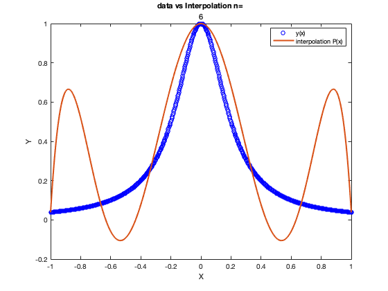
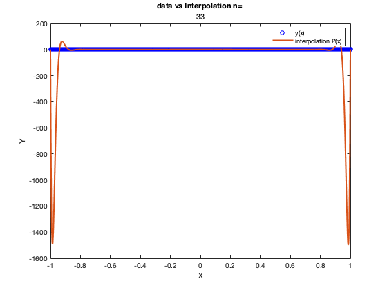
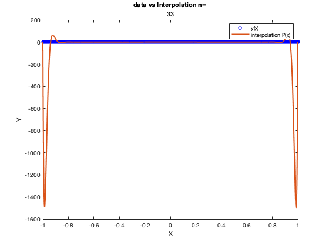

Contents
CS 375 HW 8
October 25th 2021 Juan A. Ormaza
clear all; clc; close all;
Problem 1
Part 1 written by hand (see attachments)
Problem 2
% Part a attached (see attachments); % Part b attached (see attachments); % Part C x=@(i,n)-1+ i*(2/n); f=@(x) 1./(1+25*x.^2); n=2:2:20; nfine=100*n; for i=1:length(nfine) xValPoints=0:1:nfine(i); xIntPoints=0:1:n(i); xInt=x(xIntPoints,n(i)); yInt=f(xInt); xVal=x(xValPoints,nfine(i)); yVal=f(xVal); figure(i) plot(xVal,yVal,'bo','LineWidth',1); hold on; c=interp_monomials(xInt,yInt); c=rot90(c); c=rot90(c); plot(xVal,polyval(c,xVal),'LineWidth',2); xlabel('X'); ylabel('Y'); legend('y(x)','interpolation P(x)'); title('data vs Interpolation n= ',num2str(n(i))); end % Part D n_int=33; N = n_int*100; points = 0:1:N; xIntPoints=0:1:n_int; xInt=x(xIntPoints,n_int); yInt=f(xInt); xValues = x(points,N); yValues = f(xValues); figure(11) plot(xValues,yValues,'bo','LineWidth',1); hold on; c=interp_monomials(xInt,yInt); c=rot90(c); c=rot90(c); plot(xValues,polyval(c,xValues),'LineWidth',2); xlabel('X'); ylabel('Y'); legend('y(x)','interpolation P(x)'); title('data vs Interpolation n= ',num2str(n_int)); fprintf("for n>3=3 it is possible to see how the interpolation fails to adjust to the values of f(x)\n") fprintf("this, could be due to the size of the V matrix and the ill-conditioning of the solution.\n") fprintf("moreover, the matrix is nearly singular or not scaled correctly at all.\n ")
Warning: Matrix is close to singular or badly scaled. Results may be inaccurate. RCOND = 1.267771e-16. for n>3=3 it is possible to see how the interpolation fails to adjust to the values of f(x) this, could be due to the size of the V matrix and the ill-conditioning of the solution. moreover, the matrix is nearly singular or not scaled correctly at all.
 
 Problem 3
N = 33; n_fine = 100*N; xIntPoints=0:1:N; xInt=x(xIntPoints,N); yInt=f(xInt); points = 0:1:n_fine; xValues = x(points,n_fine); yValues = f(xValues); figure(12) plot(xValues,yValues,'bo','LineWidth',1); hold on; intValues = zeros(1,n_fine); for i=1:n_fine+1 intValues(i)=Lagrange(xInt,yInt,xValues(i)); end plot(xValues,intValues,'LineWidth',2); xlabel('X'); ylabel('Y'); legend('y(x)','Lagrange interpolation P(x)'); title('data vs Lagrange interpolation n= ',num2str(N)); fprintf('as seen in figure 12, the same bad behavior near the ends is found in the lagrange interpolation\n') fprintf('this is because lagrange interpolation also creates a polynomial that has to adjust to the curve.\n') fprintf('moreover, the equispaced interpolation points make the error increase as seen in the graph.\n') fprintf('therefore, higher ns do not increase accuracy of the interpolation\n')
as seen in figure 12, the same bad behavior near the ends is found in the lagrange interpolation this is because lagrange interpolation also creates a polynomial that has to adjust to the curve. moreover, the equispaced interpolation points make the error increase as seen in the graph. therefore, higher ns do not increase accuracy of the interpolation
Problem 4
x_cheby=@(i,n) cos(((2*i + 1)*pi)./(2*n+2)); N = 60; n_fine = 100*N; xIntPoints=0:1:N; xInt=x_cheby(xIntPoints,N); yInt=f(xInt); points = 0:1:n_fine; xValues = x(points,n_fine); yValues = f(xValues); figure(13) plot(xValues,yValues,'bo','LineWidth',1); hold on; intValues = zeros(1,n_fine); for i=1:n_fine+1 intValues(i)=Lagrange(xInt,yInt,xValues(i)); end plot(xValues,intValues,'LineWidth',2); xlabel('X'); ylabel('Y'); legend('y(x)','Lagrange interpolation P(x)'); title('data vs Lagrange interpolation and Chebyshev points n= ',num2str(N)); fprintf('As seen in this example chebyshev points, in comparison to equispaced one do converge\n') fprintf('and there is a limit to the error the interpolation can have. Because of this, the interpolation\n') fprintf('behaves much better at the ends and will keep on improving as n increases.\n') fprintf('to show this, I used an n that is almost double the one in previous examples\n')
As seen in this example chebyshev points, in comparison to equispaced one do converge and there is a limit to the error the interpolation can have. Because of this, the interpolation behaves much better at the ends and will keep on improving as n increases. to show this, I used an n that is almost double the one in previous examples
Problem 5
f1=@(x) sin(x); f2=@(x) abs(x); x_cheby=@(i,n) cos(((2*i + 1)*pi)./(2*n+2)); n_array=1:1:16; fprintf('Error\t sin(x)\t\t abs(x)\n'); for i=1:length(n_array) n_fine=n_array(i)*100; intPoints = 1:1:n_array(i); x_int=x_cheby(intPoints,n_array(i)); y_int1=f1(x_int); y_int2=f2(x_int); plotPoints = 1:1:n_fine; xValues = x(plotPoints,n_fine); y1Values = f1(xValues); y2Values = f2(xValues); sin_int=zeros(1,n_fine); abs_int=zeros(1,n_fine); for j=1:n_fine sin_int(j)=Lagrange(x_int,y_int1,xValues(j)); abs_int(j)=Lagrange(x_int,y_int2,xValues(j)); end figure(13+i) subplot(2,1,1) plot(xValues,y1Values,'bo'); hold on plot(xValues,sin_int,'r','LineWidth',2); title('data vs Lagrange interpolation and Chebyshev points n= ',num2str(n_array(i))); legend('sin(x)','interpolation'); subplot(2,1,2) plot(xValues,y2Values,'ro'); hold on plot(xValues,abs_int,'b','LineWidth',2); legend('|x|','interpolation') fprintf(' n=%2.0f\t %10.10f\t %10.10f\n',n_array(i),max(abs(y1Values-sin_int)),max(abs(y2Values-abs_int))); end fprintf('\n\nAs seen from the plots, it is possible to notice that the interpolation adjusts\n') fprintf('correctly to sin(x), but has trouble adjusting to abs(x). One main reason of this is because\n') fprintf('|x| is not a continuous function, thus, the interpolation polynomial will have trouble interpolation |x|\n') fprintf('this can be seen at the endpoints of the plots where the interpolation suddenly increases or decreases\n')
Error sin(x) abs(x) n= 1 1.4911079239 0.7071067812 n= 2 0.0396232083 2.0000000000 n= 3 0.2592932162 0.2705980501 n= 4 0.0005043694 1.4249084145 n= 5 0.0073679265 0.1725460301 n= 6 0.0000030235 1.3408569429 n= 7 0.0000784384 0.1274488948 n= 8 0.0000000105 1.3119484318 n= 9 0.0000004273 0.1012465126 n=10 0.0000000000 1.2984369017 n=11 0.0000000014 0.0840524134 n=12 0.0000000000 1.2909913934 n=13 0.0000000000 0.0718805412 n=14 0.0000000000 1.2864385142 n=15 0.0000000000 0.0628024108 n=16 0.0000000000 1.2834459799 As seen from the plots, it is possible to notice that the interpolation adjusts correctly to sin(x), but has trouble adjusting to abs(x). One main reason of this is because |x| is not a continuous function, thus, the interpolation polynomial will have trouble interpolation |x| this can be seen at the endpoints of the plots where the interpolation suddenly increases or decreases